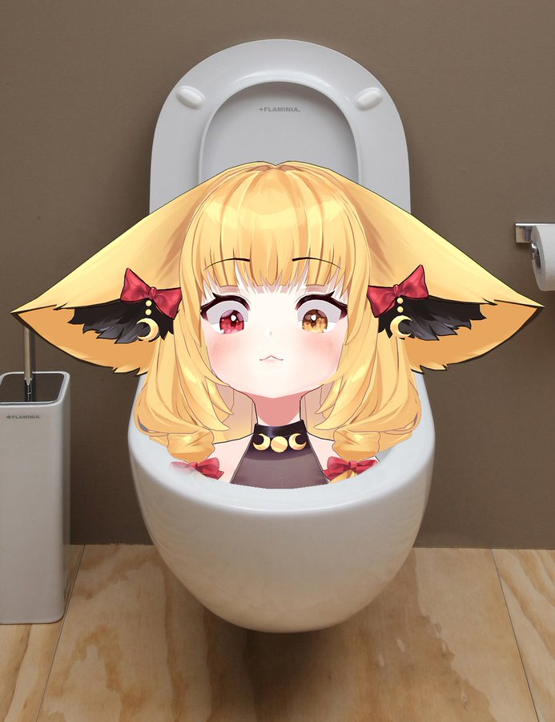
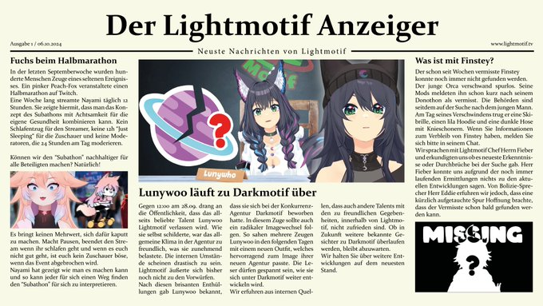

Sorry der geht nicht so richtig habe nicht mehr genugend Zeit xD
In dieser Schnitzeljagd wirst du eine Reihe von Fragen beantworten, diese wurden aus X(Twitter) Tweets genommen und sollen dann gesucht werden und beantwortet werden, die sich rund um German VTuber also um Lightmotiv drehen.
Du kannst einen Hinweis zu jeder Frage erhalten, wenn du nicht weiterkommst, dort kommst du zu dem richtigen Tweet wo die Lösung enthalten ist.
Diese VTuber Schnitzeljagd wurde von BenFrox inheralb von 6 Stunden erstellt. Erwartet also bitte nicht zu viel, doch wenn euch diese kleine version von der Schnitzeljagd gefallen hat und ihr noch mehr ideen habt oder noch eine andere version davon haben wollt, schaut gerne in meinem Stream vorbei und gebt mir euer feedback. Da ich auch ein kleiner VTuber bin würde ich mich überer euren Support freuen und mein traum ist auch mal zu Lightmotif zu gehören.Twitch
Wann hat Luny Geburtstag?
HinweisWer war das vierte Lightmotif-Mitglied?
HinweisWie heißt der Song, den Luny & Jinja zusammen am 10.02.2024 herausgebracht haben?
HinweisWann ist Luny Twitch Affiliate geworden?
HinweisWas fehlt vor diesem Klo?
 HinweisWann ist Luny Twitch Partnerin geworden?
HinweisRechne alle Zahlen zusammen, die auf der ersten Ausgabe von "Der Lightmotif Anzeiger" sind. (Wenn Zahlen durch einen Punkt . oder einen Doppelpunkt : getrennt sind, dann sind das neue Zahlen.)
 Bild in groß vom TweetWer war der vorletzte, der von Lightmotif Twitch Partner wurde?
HinweisWann ist Luny YouTube Partner geworden?
HinweisWer war die letzte Person von Lightmotif, die Geburtstag hatte (Stand 25.10.2024)?
HinweisWie viel Geld wurde beim Spendenstream von Lightmotif "LightUP" gesammelt?
HinweisWie viel ergeben alle nicht ausgeschriebenen Zahlen zusammen?
Achtung könnte laut werden ist aber nur auf 25% Lautsterke.
Du hast alle Fragen beantwortet und die Schnitzeljagd erfolgreich abgeschlossen!
Du hast alle Fragen beantwortet und die Schnitzeljagd erfolgreich abgeschlossen!